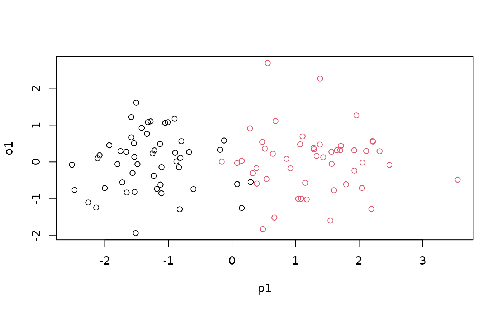

Supervised ordination of samples from two groups: one predictive
component that separates the groups, and orthogonal components that
describe the rest of the table's variation, unrelated to the groups.
OPLS-DA (Trygg & Wold 2002) gives the same predictions as a one-component
plsda(), rotated so that the plot of the first two components shows the
group difference along the first axis alone. Gives the same results as
pyopls and ropls::opls(), computed straight from sparse input without
forming any dense table or \(n \times n\) matrix.
Usage
oplsda(
counts,
groups,
data = NULL,
margin = 1L,
norm = "none",
pseudocount = NULL,
scale = TRUE,
n_orthogonal = 1L,
cpus = n_cpus()
)Arguments
- counts
A numeric matrix of feature abundances (samples \(\times\) features), or any of the table types listed under "Input Types".
- groups
The known group of each sample: a vector or factor with one value per sample, matched to the samples in
countsby name when both are named, else in the same order. Or, whendatais given, the name of one of its columns (or a vector with one value per row ofdata). There must be exactly two groups (see "Two groups only"). A factor's unused levels are dropped.- data
Sample metadata: a data frame with one row per sample, holding the column named in
groups. Rows are matched to the samples incountsby row name, and rows for other samples are ignored; without row names, they must be in the same order as the samples. Default:NULL.- margin
The margin containing samples.
1if samples are rows,2if samples are columns. Ignored whencountsis a special object class (e.g.phyloseq). Default:1- norm
Normalize the incoming counts. Options are:
'none': No transformation.'percent': Relative abundance (sample abundances sum to 1).'hellinger': Square root of relative abundance (the Hellinger transformation).'binary': Unweighted presence/absence (each count is either 0 or 1).'clr': Centered log ratio.'rclr': Robust centered log ratio.'log': Log relative abundance (log-TSS), withpseudocountadded to every value first.
Default:
'none'.- pseudocount
Value added to counts to handle zeros when
norm = 'clr'or'log'. Ignored for other normalization methods. See Pseudocount section.- scale
Scale each feature to unit variance (after
norm, before the analysis), asropls::opls()(scaleC = 'standard') and pyopls (scale = True) do by default, so that every feature has equal weight. Features with constant values are left out: their weights, loadings and VIP are 0. Default:TRUE- n_orthogonal
The number of orthogonal components. Default:
1.0gives a one-componentplsda(). Reduced to \(n - 2\) for \(n\) samples, or to the number of features less one, if fewer; and, with a warning, to the number that the table can fit (see "Method").- cpus
How many parallel processing threads should be used. The default,
n_cpus(), will use all logical CPU cores.
Value
A numeric matrix with one row per sample and one column per
component: the predictive component "p1", then the orthogonal ones
"o1", "o2", etc., as described in "Ordination result" below. The
values are the scores (ropls' scoreMN and orthoScoreMN). So
plot(ord) draws the usual OPLS-DA score plot, p1 against o1.
Attributes:
method:"oplsda".eig: The variance of the table that each component explains, \(|t|^2 |p|^2 / (n - 1)\) for scores \(t\) and loadings \(p\). (Asplsda()'s: OPLS components are not eigenvectors.)prop: The proportion of the table's total variance that each component explains,eig / trace: \(R^2X\) of each component, asroplsreports it (modelDF$R2X).trace: The total variance of the table: the sum of all features' variances (afternormandscale), aspca()'strace.r2x: \(R^2X\), the proportion of the table's variance that all the components explain together:sum(prop)(ropls'R2X(cum)).r2y: \(R^2Y\), the proportion of the variance of the groups' indicator that the model explains (ropls'R2Y(cum); the \(R^2\) of the fitted values, as in pyopls). Only the predictive component contributes.loadings: The loadings \(p\): one row per feature and one column per component (ropls'loadingMNandorthoLoadingMN).weights: The weights \(w\), unit-length columns (ropls'weightMNandorthoWeightMN, pyopls'sW_ortho_).y_loading: The Y loading \(q\) of the predictive component, for the indicator of the second group as centred (and scaled).vip: Variable importance in projection (VIP) of the predictive component: one value per feature (ropls'vipVn). See "Method".groups: Each sample's group, as a factor with two levels, in the order of the rows ofcentroids.centroids: The mean score of each group: two rows and one column per component.
Details
Method
Let \(X\) be the normalized table, its features centred (and, with
scale = TRUE, scaled to unit variance), and \(y\) the indicator of the
second group (1 for its samples, 0 for the first group's), centred (and
scaled) the same way. The predictive weights are
\(w = X^T y / |X^T y|\), as for a one-component PLS.
O-PLS (Trygg & Wold 2002) then removes, one at a time, the variation of
\(X\) that is orthogonal to \(y\). With \(X_a\) what is left of
\(X\) before orthogonal component \(a\):
\(t = X_a w\) and \(p = X_a^T t / |t|^2\);
the orthogonal weights \(w_o\) are the part of \(p\) orthogonal to \(w\), \(p - (w^T p) w\), scaled to unit length;
the orthogonal scores are \(t_o = X_a w_o\) and the loadings \(p_o = X_a^T t_o / |t_o|^2\);
\(X_{a+1} = X_a - t_o p_o^T\).
The predictive component is fitted last, to the filtered table
\(X_k\): scores \(t_p = X_k w\), loadings
\(p_p = X_k^T t_p / |t_p|^2\), and Y loading
\(q = y^T t_p / |t_p|^2\). Its scores are those of
the one-component PLS of \(y\) on \(X_k\), and \(t_p q\) are the
fitted values of \(y\), the same as a one-component plsda()'s up to
scaling: \(R^2Y = |t_p|^2 q^2 / |y|^2\). All the scores are
orthogonal, so the components' eigs add up to what they explain
together.
Orthogonal components stop early, with a warning, when \(|w_o|\) (before scaling) falls to \(\sqrt{\epsilon} \approx 1.5 \times 10^{-8}\) times \(|p|\): then what is left of the table has no variation orthogonal to the groups, beyond rounding error.
VIP (Galindo-Prieto et al. 2014) is, for one predictive component,
\(VIP_j = \sqrt{P} |p_{pj}| / |p_p|\)
for \(P\) features (constant ones included, when scale leaves them
out): each feature's share of the predictive loadings. The mean of the
squared VIPs is 1, so features with a VIP above 1 are often called
important.
The table is never centred in memory: products with \(X_a\) are
computed from the non-zero values alone, in parallel, as in pca(), so
a sparse table is never made dense.
Two groups only
OPLS-DA, as pyopls, ropls and most tools implement it, models one
response: here, membership of the second group. With more than two groups,
use plsda().
Choosing norm
For microbiome counts, norm = 'clr' (with a pseudocount) is the usual
choice: OPLS-DA then works on log-ratios, which suit compositional data.
Validate the separation
OPLS-DA is supervised: its predictive component separates the groups even
when they don't differ (with more features than samples, almost always).
Don't read the plot, or a high \(R^2Y\), as evidence of a difference.
Test it with a permutation test of the distances, such as permanova(),
or estimate the error rate of classifying new samples by cross-validation
(\(Q^2\), which oplsda() doesn't compute).
Matching pyopls and ropls
oplsda() gives the same orthogonal scores, weights and loadings as
pyopls's OPLS(n_orthogonal, scale = True) (T_ortho_, W_ortho_ and
P_ortho_), and the same predictive scores and loadings as scikit-learn's
PLSRegression(1, scale = False) fitted to pyopls's filtered table, up to
the signs of the components. It also gives the same scores, loadings,
\(R^2X\), \(R^2Y\) and VIP as ropls::opls(predI = 1, orthoI = n_orthogonal). pyopls's own \(R^2X\) (its score()) is the proportion
of variance left in the filtered table, which is a different measure:
1 - sum(prop[-1]).
Same names in other packages
ropls::opls() does OPLS-DA under another name; no other common package
has an oplsda().
Component signs and reproducibility
A component's sign is arbitrary, so different software can return mirror
images of the same component. oplsda() flips each component so that its
largest score in absolute value is positive, and flips its weights and
loadings (and the Y loading) with it. Results are identical from run to
run and for any number of cpus.
Ordination result
Every ordination function (pcoa(), pca(), rpca(), dbrda(), capda(),
capscale(), mds(), nmds(), isomap(), tsne(), umap(), and so
dist_ord()) returns the same kind of
object: a numeric matrix with one row per sample and one column per
axis, so that it can go straight into a data frame. Rows are
named after the samples, when the input has names. Columns are named
after the method: "PCoA1", "PC1", "RPCA1", "dbRDA1" or "CAP1"
(then "MDS1" for unconstrained axes), "MDS1", "NMDS1",
"Isomap1", "TSNE1", "UMAP1", and so on.
Its attributes always begin with these three, in this order, each with one value per column:
method: The method's ID, e.g."pcoa"or"nmds".eig: Each axis's eigenvalue, on the method's own scale:pcoa()andisomap()give the eigenvalues of Gower's centered matrix (sums of squares);pca()andrpca()give variances, which arepcoa()'s divided by \(n - 1\) for \(n\) samples; anddbrda()andcapscale()followvegan, which also divides by \(n - 1\) when any distance is 4 or more.NAformds(),nmds(),tsne(), andumap(), which have no eigenvalues.prop: The proportion of the total variance (or inertia) that each axis explains. Unlikeeig, it is comparable between methods, so use it to label axes.NAwhere it isn't defined.
Attributes particular to the method follow them, and last display,
with the ordination's title for plot() and print(): the method's
name, and for the methods that take distances, the distance matrix's
title, such as "Principal Coordinates Analysis of Bray-Curtis
Dissimilarity" (see ecodive_display). The matrix has class
"ecodive_ord" (as well as "matrix"), so that print() lists the
other attributes by name rather than in full, and plot() draws the
samples on the first two axes, labelled from the attributes, with any
loadings, constraints and centroids on top (see plot.ecodive_ord()).
plot(ord, "Species", iris) colours the samples by a column of
metadata. Subsetting with [, or as.data.frame(), gives a plain
matrix or data frame without the attributes.
Input Types
The counts parameter is designed to accept a simple numeric matrix, but
seamlessly supports objects from the following biological data packages:
phyloseqrbiomSummarizedExperimentTreeSummarizedExperiment
For large datasets, standard matrix operations may be slow. See
vignette('performance') for details on using optimized formats
(e.g. sparse matrices) and parallel processing.
Pseudocount
The pseudocount parameter is only relevant when norm = 'clr'
or norm = 'log'.
Zeros are undefined in the centered log-ratio (CLR) transformation and
in the log of proportions. If norm is 'clr' or
'log', pseudocount is NULL (the default), and
zeros are detected, the function uses half the minimum non-zero value
(min(x[x>0]) / 2) and issues a warning.
To suppress the warning, provide an explicit value (e.g., 1), or
replace the zeros first with replace_zeros(), whose
result needs no pseudocount.
Why this matters: The choice of pseudocount is not neutral; it acts as a weighting factor that can significantly distort downstream results, especially for sparse datasets. See Gloor et al. (2017) and Kaul et al. (2017) for open-access discussions on the mathematical implications, or Costea et al. (2014) for the impact on community clustering.
See aitchison for references.
References
Trygg, J., & Wold, S. (2002). Orthogonal projections to latent structures (O-PLS). Journal of Chemometrics, 16(3), 119-128. doi:10.1002/cem.695
Bylesjö, M., Rantalainen, M., Cloarec, O., Nicholson, J. K., Holmes, E., & Trygg, J. (2006). OPLS discriminant analysis: combining the strengths of PLS-DA and SIMCA classification. Journal of Chemometrics, 20, 341-351. doi:10.1002/cem.1006
Galindo-Prieto, B., Eriksson, L., & Trygg, J. (2014). Variable influence on projection (VIP) for orthogonal projections to latent structures (OPLS). Journal of Chemometrics, 28(8), 623-632. doi:10.1002/cem.2627
Thévenot, E. A., Roux, A., Xu, Y., Ezan, E., & Junot, C. (2015). Analysis of the human adult urinary metabolome variations with age, body mass index, and gender by implementing a comprehensive workflow for univariate and OPLS statistical analyses. Journal of Proteome Research, 14(8), 3322-3335. doi:10.1021/acs.jproteome.5b00354
Examples
# OPLS-DA of two iris species, as if their measurements were counts.
two <- droplevels(subset(iris, Species != 'setosa'))
counts <- round(two[, 1:4] * 10)
ord <- oplsda(counts, 'Species', two)
ord
#> # A matrix: 100 samples × 2 axes
#> # Orthogonal Partial Least Squares Discriminant Analysis
#> # % of variance: 53.1, 33.0
#> p1 o1
#> 51 -1.51 1.61
#> 52 -1.32 1.08
#> 53 -0.903 1.17
#> 54 -0.823 -1.29
#> 55 -0.675 0.268
#> 56 -1.11 -0.144
#> 57 -1.01 1.08
#> 58 -2.26 -1.1
#> 59 -1.34 0.762
#> 60 -1.18 -0.732
#> # … 90 more samples
#> # Use print(x, n = ...) to see more samples
#> # Attributes: method, eig, prop, trace, r2x, r2y, loadings, weights,
#> # y_loading, vip, groups, centroids
plot(ord)

attr(ord, 'r2x')
#> [1] 0.8608168
attr(ord, 'r2y')
#> [1] 0.7746364
attr(ord, 'vip')
#> Sepal.Length Sepal.Width Petal.Length Petal.Width
#> 0.8291116 0.4296308 1.2224766 1.2781011
# CLR-transformed microbiome counts, with two orthogonal components.
grp <- rep(c('a', 'b'), length.out = nrow(ex_counts))
ord <- oplsda(ex_counts, grp, norm = 'clr', pseudocount = 1, n_orthogonal = 2)
attr(ord, 'centroids')
#> p1 o1 o2
#> a 0.9726967 -1.110223e-16 2.775558e-16
#> b -0.9726967 2.220446e-16 -2.775558e-16
# Supervised: always validate the separation, e.g. with PERMANOVA.
permanova(aitchison(ex_counts, pseudocount = 1), grp, permutations = 99)
#> Permutational multivariate analysis of variance (PERMANOVA) of Aitchison Distance
#>
#> F = 0.5624, p = 0.68, z = -0.6652
#> Permutations: 99 (free)
#>
#> Model R2 = 0.2195. Model tested as a whole:
#>
#> Df SumOfSqs R2 F Pr(>F)
#> Model 1 23.11 0.2195 0.562 0.68
#> Residual 2 82.20 0.7805
#> Total 3 105.31 1.0000